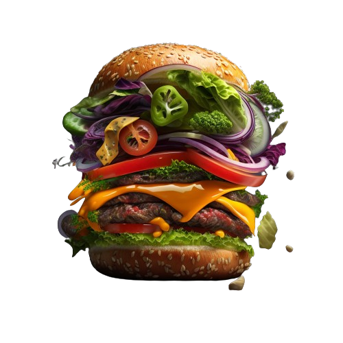

Wendy's Chicken

Preparation Time:
20 mins
Cook Time:
15 mins
Total Time:
35 mins
Ingredients:
Chicken breast fillets
Buttermilk
All-purpose flour
Garlic powder
Onion powder
Paprika
Salt and pepper to taste
Oil for frying
Directions:
Marinate chicken breast fillets in buttermilk for at least 30 minutes.
In a bowl, mix flour, garlic powder, onion powder, paprika, salt, and pepper.
Remove chicken from buttermilk and coat with the seasoned flour mixture.
Heat oil in a pan and fry chicken until golden brown and cooked through.
Serve Wendy's Chicken with your favorite dipping sauce.
Enjoy your Wendy's-inspired chicken!